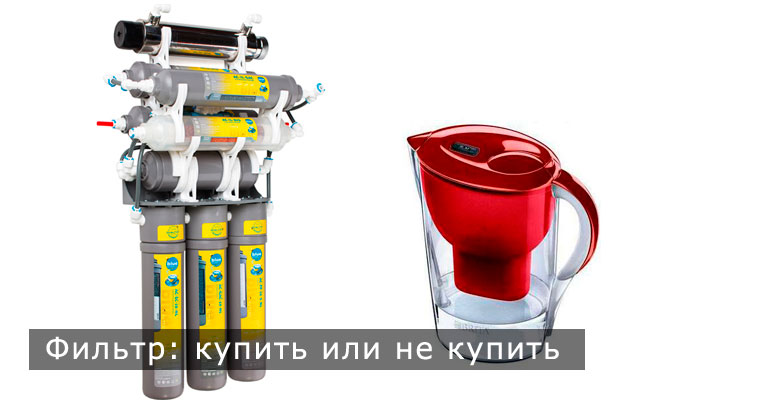

Когда-то, в далекие времена, у наших предков не было никаких проблем с утолением жажды. Они пили чистую родниковую воду или воду из собственноручно вырытого колодца. Времена изменились...
Большинство населения живет в городах и пользуется водой из-под крана. Довольно часто вода поступает в наши квартиры не из артезианских скважин, а из открытых водозаборников. Системы водоподготовки очищают и обеззараживают ее. Но достаточно ли такой очистки? В большинстве случаев из наших кранов течет желтовато-мутная вода с частичками ржавчины, со стойким запахом хлора. Пить ее неприятно и даже вредно.
В наше время многие закупают бутилированную воду, однако иногда это сопряжено с рядом неудобств. Далеко не каждый сможет самостоятельно перемещать большие бутыли, иногда нужно долго ждать доставку, никуда не отлучаясь из квартиры.
Однако прогресс не стоит на месте, предлагая нам довольно большие возможности для доочистки водопроводной воды непосредственно в квартире.
Проще всего приобрести фильтр-кувшин. С его помощью вы легко и быстро получите питьевую воду удовлетворительного качества. Наливные кувшины могут быть разных объемов - от 1, 65 л – достаточного для одного человека - до 4,8 л – для большой семьи.
Фильтрующий состав сменной кассеты в основном состоит из активированного угля. Ее ресурс 100 - 150 л, этого достаточно на 1 - 1,5 месяца для семьи из 3 человек. По окончании этого срока картридж необходимо заменить. Это можно сделать довольно быстро и просто: использованную кассету надо выкрутить из дна фильтрующей емкости и поставить на ее место новую. После этого необходимо 2 -3 раза пропустить воду через фильтр, чтобы удалить мелкие частицы фильтрующего вещества.
У такого фильтра довольно много преимуществ: невысокая стоимость, компактность, простота эксплуатации. Фильтр-кувшин можно брать с собой в поход, на дачу, пикник, он легок и не займет много места. Недостаток его в том, что быстро получить большое количество питьевой воды невозможно, так как для фильтрации необходимо время. Именно поэтому многие домохозяйки выбирают фильтры-насадки на кран.
Насадка быстро устанавливается на любой смеситель, а при помощи переключателя вы выбираете, какую воду включить: очищенную, для приготовления пищи, или обычную, для уборки или мытья посуды. Как и в кувшинах, фильтрующим элементом является активированный уголь, который удаляет неорганические и органические загрязнения водопроводной воды. Фильтром задерживаются хлор и его производные, механические примеси, а на выходе мы получаем очищенную воду. Картридж имеет ресурс от 200 до 700 л, затем его необходимо заменить. Это делается так же просто, как и с фильтрами предыдущего типа, и не составит особого труда для домохозяек.
Преимущества таких фильтров – невысокая стоимость, легкость монтажа и замены картриджей. Недостатки его в том, что качество фильтрации воды напрямую зависит от ее напора. Вода очищается лучше, если она медленно проходит через фильтр, поэтому процесс очистки занимает определенное время. Не получится одновременно пользоваться краном для мытья посуды или овощей и получения питьевой воды.
Настольные фильтры отличаются от фильтров-насадок тем, что подключаются к водопроводному крану при помощи трубки, поэтому фильтрованная вода поступает из крана. Такие фильтры подразумевают две ступени очистки, это сорбция на активированном угле и механическая фильтрация. Картриджи для настольных фильтров имеют ресурс до нескольких тысяч литров, в отличие от насадок на кран.
Однако тому, кто хочет в результате очистки получать стабильно высокое качество воды, оптимально подойдет стационарная многоступенчатая система очистки.
Это так называемые системы обратного осмоса или обратноосмотические системы. Принцип их действия в том, что вода пропускается под давлением сквозь многослойную мембрану. Ячейки мембраны столь малы, что через них проходят лишь молекулы воды. При помощи обратного осмоса удаляются такие вредные компоненты, как ртуть, магний, сульфаты, нитраты, хлор, железо. Бактерии и вирусы тоже остаются по ту сторону мембраны.
Для того, чтобы предотвратить слишком быстрое засорение тонких мембран, вода должна пройти 3 - 4 стадии очистки, прежде чем дойти до них. Эти стадии включают в себя очистку от механических примесей, размер которых больше 5 мкм, химическую очистка от хлора и его соединений, а также от органики и пестицидов. Для фильтрации необходимо давление 4 атмосферы. Если давление меньше, требуется дополнительный насос.
Системы обратного осмоса обычно устанавливают под кухонной мойкой. Комплект представляет собой систему колб и соединительных трубок, кронштейны, бак для очищенной воды, комплекты для подключения к водопроводу и к сливной магистрали. Иногда в комплект входит насос, повышающий давление воды на входе фильтра.
Картриджи в таких системах тоже сменные, как и в других фильтрах. Сроки их замены указаны в техпаспорте. Недостатком обратноосмотических систем является их относительно высокая стоимость, однако опыт показывает, что они окупаются уже через 6 месяцев. Эффективность очистки воды составляет от 97 до 99%. Такая вода считается наиболее полезной и вкусной.
Теперь, после всего прочитанного, вы сможете без труда выбрать наиболее подходящую водоочистительную систему для своего дома. Вне зависимости от выбранного вами типа фильтра, на выходе вы получите воду, которая будет значительно чище, вкуснее и полезнее водопроводной.
Телефоны для консультации, заказа фильтра или станции водоподготовки, выезда специалистов на дом для анализа качества питьевой воды: